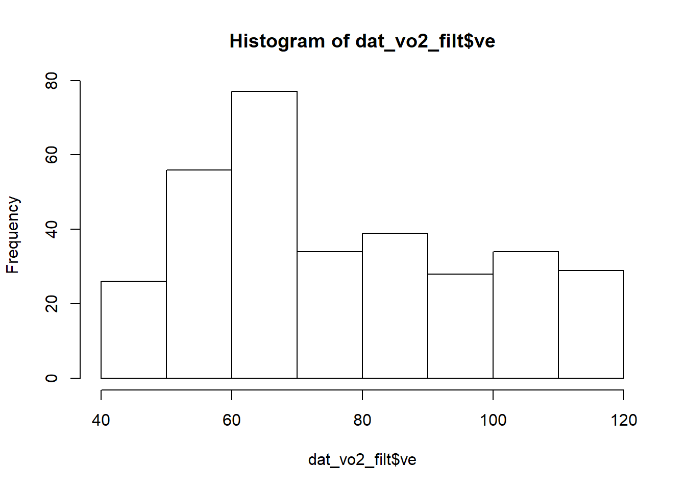

Chapter 6 Data manipulation
Download and load libraries
Import data
Let’s load the 3 files from data folder into the workspace again. File one contains the FMS data, another the VO2 raw data from the treadmill test, and lastly the lactate data from the treadmill test.
6.1 Renaming variables
6.1.1 Problem
The current column names in the dat_vo2 dataset is ugly, and you like to abbreviate it. I dislike excessively using capitals in naming stuff. It is alot of effort to type.
6.1.2 Solution
Create a vector of 8 new names that you can give to the data. The order of new names must be identical to the order of the old names from left to right.
## [1] "Time" "BF" "VO2/kg" "RER" "V'O2" "V'CO2" "V'E" "HR"# New names. Notice the commas and be pedantic about spacing
new_names <- c("time", "bf", "vo2_norm", "rer", "vo2", "vco2", "ve", "hr")
# Give the new names to the old names
colnames (dat_vo2) <- new_names
# This prints the new column names
colnames (dat_vo2) ## [1] "time" "bf" "vo2_norm" "rer" "vo2" "vco2" "ve"
## [8] "hr"6.2 Subset rows
6.2.1 Problem
You want to remove a specific row or a range of rows, and remove a specific column or a range of columns. See also Recipe 6.12.
6.2.2 Solution
To keep or remove rows based on the row numbers, use slice (). In slice, when you want to keep the row, add that row number. If you want to remove that row number, use a minus sign, -, before the number. If you want to keep or remove a range of numbers, use (start:end). To keep keeps based on the column names, use the select () function.
## time bf vo2_norm rer vo2 vco2 ve hr
## 1 min/kg <NA>## time bf vo2_norm rer vo2 vco2 ve hr
## 1 min 1/min ml/ ml/min ml/min L/min bpm
## 2 00:05 37 21.4 0.93 1371 1272 46 119
## 3 00:10 58 2.5 0.84 159 133 12 120
## 4 00:15 30 23.5 0.74 1506 1110 35 121
## 5 00:20 34 22.4 0.86 1437 1229 43 123
## 6 00:25 23 15.6 0.73 1004 735 22 124## time bf vo2_norm rer vo2 vco2 ve hr
## 1 min 1/min ml/ ml/min ml/min L/min bpm
## 2 00:10 58 2.5 0.84 159 133 12 120
## 3 00:15 30 23.5 0.74 1506 1110 35 121
## 4 00:20 34 22.4 0.86 1437 1229 43 123
## 5 00:25 23 15.6 0.73 1004 735 22 124
## 6 00:30 27 30.5 0.76 1960 1489 48 124## time bf rer
## 1 min 1/min
## 2
## 3 00:05 37 0.93
## 4 00:10 58 0.84
## 5 00:15 30 0.74
## 6 00:20 34 0.866.3 Convert characters to numeric
6.3.1 Problem
The raw Vo2 treadmill dataset contains predominantly numbers, meaning it is numeric in nature. But let us see the type of data that was imported. The str() function provides us with some summary information about the dataframe.
## 'data.frame': 330 obs. of 8 variables:
## $ time : chr " 00:05 " " 00:10 " " 00:15 " " 00:20 " ...
## $ bf : chr "37" "58" "30" "34" ...
## $ vo2_norm: chr "21.4" "2.5" "23.5" "22.4" ...
## $ rer : chr "0.93" "0.84" "0.74" "0.86" ...
## $ vo2 : chr "1371" "159" "1506" "1437" ...
## $ vco2 : chr "1272" "133" "1110" "1229" ...
## $ ve : chr "46" "12" "35" "43" ...
## $ hr : chr "119" "120" "121" "123" ...What you will see is something like this. For the variable bf, you will see $ bf : chr "37" "58" "30" "34" .... chr after the colon indicates that this variable is a character (chr). In R language, a character is anything from a letter, e.g. a, to a word, e.g. word, to even a phrase of sentence, e.g. i hate biomechanics. A character is always enclosed inside a "". Why is R so “stupid”, that it cannot differentiate numbers from words!! Well it is not that R is stupid, but it is that in our original data, characters were mixed with numbers (Figure @ref(fig:vo2-col_class)). This will be expanded upon in the Recipe 6.6, about why this is bad data formatting. In brief, each column should be made up of one type of data. If it is numbers, make it all numbers; characters, all characters. If you have mix, the default is that R treats that column as all characters. The reason why you should not leave numbers as characters is that you cannot do math on it. You cannot add apples and orange can you?

(#fig:vo2-col_class)The type of data for each class as it was imported.
6.3.2 Solution
Use the mutate() function and the as.numeric function.
dat_vo2 <- dat_vo2 %>%
mutate (bf = as.numeric(bf),
vo2_norm = as.numeric(vo2_norm),
rer = as.numeric(rer),
vo2 = as.numeric(vo2),
vco2 = as.numeric(vco2),
ve = as.numeric(ve),
hr = as.numeric(hr))
# Recheck the type of each column
str(dat_vo2)## 'data.frame': 330 obs. of 8 variables:
## $ time : chr " 00:05 " " 00:10 " " 00:15 " " 00:20 " ...
## $ bf : num 37 58 30 34 23 27 39 34 26 27 ...
## $ vo2_norm: num 21.4 2.5 23.5 22.4 15.6 30.5 23.3 29.6 31.9 29.4 ...
## $ rer : num 0.93 0.84 0.74 0.86 0.73 0.76 0.73 0.75 0.8 0.8 ...
## $ vo2 : num 1371 159 1506 1437 1004 ...
## $ vco2 : num 1272 133 1110 1229 735 ...
## $ ve : num 46 12 35 43 22 48 38 49 53 49 ...
## $ hr : num 119 120 121 123 124 124 124 124 124 125 ...6.4 Convert characters to date and time
6.4.1 Problem
The raw dat_vo2 data time variable is a character with ugly white spaces. When you use the str() function on the time column using the $ symbol, you can see that each value looks like " 00:05 ". It means that is a blank before and after the 00:05.
## chr [1:330] " 00:05 " " 00:10 " " 00:15 " " 00:20 " " 00:25 " ...6.4.2 Solution
Use the mutate() function and the as.numeric function. You will learn the mutate () function more in Recipe (WRANGLE-NEW-VARIABLES).
dat_vo2 <- dat_vo2 %>%
mutate (time = time %>%
str_squish() %>% # function strips any whitespaces
ms() %>% # convert to minutes and seconds
as.period(unit = "sec") %>% # converts entirely to seconds
as.numeric ()) # strips the S symbol to make it a number
# Recheck the type of each column
str(dat_vo2)## 'data.frame': 330 obs. of 8 variables:
## $ time : num 5 10 15 20 25 30 35 40 45 50 ...
## $ bf : num 37 58 30 34 23 27 39 34 26 27 ...
## $ vo2_norm: num 21.4 2.5 23.5 22.4 15.6 30.5 23.3 29.6 31.9 29.4 ...
## $ rer : num 0.93 0.84 0.74 0.86 0.73 0.76 0.73 0.75 0.8 0.8 ...
## $ vo2 : num 1371 159 1506 1437 1004 ...
## $ vco2 : num 1272 133 1110 1229 735 ...
## $ ve : num 46 12 35 43 22 48 38 49 53 49 ...
## $ hr : num 119 120 121 123 124 124 124 124 124 125 ...6.4.3 Discussion
Notice in the function above, I chained a series of steps together, using the pipe, %>%, function. Alternatively, I could do it in separate steps, and we can take a look at how each step changed the appearance of the time variable.
# removes whitespaces around the time variable
dat_vo2 %>%
mutate (time = time %>%
str_squish()) %>%
head()## time bf vo2_norm rer vo2 vco2 ve hr
## 1 5 37 21.4 0.93 1371 1272 46 119
## 2 10 58 2.5 0.84 159 133 12 120
## 3 15 30 23.5 0.74 1506 1110 35 121
## 4 20 34 22.4 0.86 1437 1229 43 123
## 5 25 23 15.6 0.73 1004 735 22 124
## 6 30 27 30.5 0.76 1960 1489 48 124## Warning: Problem with `mutate()` input `time`.
## x Some strings failed to parse, or all strings are NAs
## i Input `time` is `time %>% ms()`.## Warning in .parse_hms(..., order = "MS", quiet = quiet): Some strings failed to
## parse, or all strings are NAs## time bf vo2_norm rer vo2 vco2 ve hr
## 1 <NA> 37 21.4 0.93 1371 1272 46 119
## 2 <NA> 58 2.5 0.84 159 133 12 120
## 3 <NA> 30 23.5 0.74 1506 1110 35 121
## 4 <NA> 34 22.4 0.86 1437 1229 43 123
## 5 <NA> 23 15.6 0.73 1004 735 22 124
## 6 <NA> 27 30.5 0.76 1960 1489 48 124# converts entirely to seconds
dat_vo2 %>%
mutate (time = time %>%
as.period(unit = "sec"))%>%
head()## time bf vo2_norm rer vo2 vco2 ve hr
## 1 5S 37 21.4 0.93 1371 1272 46 119
## 2 10S 58 2.5 0.84 159 133 12 120
## 3 15S 30 23.5 0.74 1506 1110 35 121
## 4 20S 34 22.4 0.86 1437 1229 43 123
## 5 25S 23 15.6 0.73 1004 735 22 124
## 6 30S 27 30.5 0.76 1960 1489 48 124# strips the S symbol to make it a number
dat_vo2 %>%
mutate (time = time %>%
as.numeric ())%>%
head()## time bf vo2_norm rer vo2 vco2 ve hr
## 1 5 37 21.4 0.93 1371 1272 46 119
## 2 10 58 2.5 0.84 159 133 12 120
## 3 15 30 23.5 0.74 1506 1110 35 121
## 4 20 34 22.4 0.86 1437 1229 43 123
## 5 25 23 15.6 0.73 1004 735 22 124
## 6 30 27 30.5 0.76 1960 1489 48 1246.5 Split Numeric Variable into Categories
6.5.1 Problem
You want to split the time variable of the dat_vo2 dataset into chunks of 210 sec, and create a new variable called stage. You will learn the mutate () function more in Recipe 6.11. I will not the cut_interval function explain, other than to say the length argument is used to specify the range of evenly spaced values to categorize over.
6.5.2 Solution
## time bf vo2_norm rer vo2 vco2 ve hr stage
## 1 5 37 21.40000 0.930000 1371 1272 46 119 1
## 2 10 58 2.50000 0.840000 159 133 12 120 1
## 3 15 30 23.50000 0.740000 1506 1110 35 121 1
## 4 20 34 22.40000 0.860000 1437 1229 43 123 1
## 5 25 23 15.60000 0.730000 1004 735 22 124 1
## 6 30 27 30.50000 0.760000 1960 1489 48 124 1
## 7 35 39 23.30000 0.730000 1499 1092 38 124 1
## 8 40 34 29.60000 0.750000 1902 1427 49 124 1
## 9 45 26 31.90000 0.800000 2048 1641 53 124 1
## 10 50 27 29.40000 0.800000 1891 1519 49 125 1
## 11 55 34 28.90000 0.790000 1856 1465 47 126 1
## 12 60 32 29.90000 0.800000 1919 1526 49 126 1
## 13 65 31 29.90000 0.790000 1922 1513 46 124 1
## 14 70 24 33.00000 0.840000 2118 1779 56 126 1
## 15 75 42 29.90000 0.800000 1921 1543 50 126 1
## 16 80 33 31.70000 0.800000 2035 1638 51 124 1
## 17 85 24 32.10000 0.820000 2060 1692 50 125 1
## 18 90 28 32.90000 0.820000 2112 1731 53 126 1
## 19 95 28 33.70000 0.830000 2164 1795 52 130 1
## 20 100 24 33.40000 0.870000 2142 1863 57 128 1
## 21 105 31 31.10000 0.850000 1997 1694 52 129 1
## 22 110 21 34.50000 0.880000 2214 1945 58 130 1
## 23 115 37 32.70000 0.840000 2098 1761 55 131 1
## 24 120 28 34.70000 0.850000 2230 1905 58 131 1
## 25 125 33 34.30000 0.870000 2201 1904 61 132 1
## 26 130 30 28.30000 0.870000 1814 1579 51 133 1
## 27 135 29 32.60000 0.890000 2094 1861 57 133 1
## 28 140 32 35.40000 0.860000 2275 1961 60 133 1
## 29 145 30 33.50000 0.880000 2149 1889 58 133 1
## 30 150 28 33.90000 0.900000 2176 1962 60 134 1
## 31 155 24 33.70000 0.930000 2166 2013 63 134 1
## 32 160 34 17.50000 0.880000 1124 993 34 135 1
## 33 165 25 36.30000 0.790000 2332 1844 48 136 1
## 34 170 33 38.00000 0.840000 2439 2053 65 137 1
## 35 175 34 33.90000 0.870000 2179 1896 61 138 1
## 36 180 34 32.40000 0.900000 2077 1868 60 139 1
## 37 185 46 32.20000 0.860000 2069 1773 61 140 1
## 38 190 26 25.30000 1.000000 1625 1623 63 141 1
## 39 195 27 17.00000 1.090000 1094 1198 49 145 1
## 40 200 27 15.20000 1.150000 977 1122 47 148 1
## 41 205 27 15.80000 1.180000 1017 1196 49 151 1
## 42 210 24 12.10000 1.130000 779 879 36 154 1
## 43 215 51 18.30000 0.960000 1175 1130 45 156 2
## 44 220 40 35.80000 0.820000 2299 1892 57 149 2
## 45 225 57 29.30000 0.770000 1883 1442 50 138 2
## 46 230 33 33.00000 0.880000 2118 1869 62 131 2
## 47 235 35 26.90000 0.940000 1727 1620 55 130 2
## 48 240 46 27.70000 0.810000 1776 1444 49 132 2
## 49 245 35 35.00000 0.840000 2245 1888 63 132 2
## 50 250 43 29.70000 0.840000 1906 1595 54 133 2
## 51 255 27 30.50000 0.840000 1961 1643 52 137 2
## 52 260 23 31.30000 0.800000 2012 1612 48 139 2
## 53 265 29 35.90000 0.810000 2306 1871 57 140 2
## 54 270 31 34.00000 0.820000 2181 1790 55 139 2
## 55 275 34 31.40000 0.830000 2018 1666 52 137 2
## 56 280 34 36.80000 0.850000 2363 1997 63 140 2
## 57 285 34 34.90000 0.840000 2240 1889 59 142 2
## 58 290 24 36.00000 0.890000 2314 2059 62 144 2
## 59 295 28 31.30000 0.830000 2007 1667 47 145 2
## 60 300 40 36.70000 0.800000 2354 1888 57 146 2
## 61 305 30 36.90000 0.870000 2369 2053 62 145 2
## 62 310 37 25.00000 0.830000 1603 1338 41 145 2
## 63 315 32 37.40000 0.870000 2399 2083 63 144 2
## 64 320 29 36.40000 0.890000 2338 2081 64 145 2
## 65 325 35 34.20000 0.860000 2193 1880 58 144 2
## 66 330 32 26.40000 0.890000 1696 1507 48 146 2
## 67 335 17 40.00000 0.820000 2571 2101 51 147 2
## 68 340 26 38.80000 0.820000 2491 2033 55 147 2
## 69 345 21 33.70000 0.840000 2163 1817 48 147 2
## 70 350 29 36.70000 0.840000 2356 1991 57 147 2
## 71 355 33 31.20000 0.850000 2005 1707 51 146 2
## 72 360 38 39.40000 0.840000 2530 2114 63 145 2
## 73 365 30 35.60000 0.880000 2288 2009 60 145 2
## 74 370 27 33.30000 0.890000 2135 1907 55 145 2
## 75 375 40 36.50000 0.870000 2344 2043 64 146 2
## 76 380 31 26.00000 0.890000 1672 1487 45 147 2
## 77 385 43 41.40000 0.860000 2661 2285 69 149 2
## 78 390 37 34.80000 0.900000 2233 2014 63 150 2
## 79 395 47 32.10000 0.910000 2063 1879 65 150 2
## 80 400 28 27.90000 1.050000 1791 1872 71 150 2
## 81 405 32 16.00000 1.150000 1027 1180 52 156 2
## 82 410 30 16.40000 1.270000 1051 1334 60 159 2
## 83 415 32 10.30000 1.200000 662 795 38 163 2
## 84 420 26 17.50000 1.130000 1125 1266 47 164 2
## 85 425 47 21.80000 0.930000 1403 1301 46 166 3
## 86 430 35 37.40000 0.890000 2404 2138 65 158 3
## 87 435 42 31.70000 0.900000 2037 1826 60 149 3
## 88 440 33 29.80000 0.930000 1912 1781 55 141 3
## 89 445 23 32.00000 0.920000 2054 1890 57 141 3
## 90 450 41 30.40000 0.850000 1955 1662 53 144 3
## 91 455 44 32.40000 0.830000 2081 1727 57 145 3
## 92 460 37 34.10000 0.840000 2192 1833 58 145 3
## 93 465 25 34.00000 0.890000 2183 1940 59 145 3
## 94 470 29 34.20000 0.850000 2198 1866 56 148 3
## 95 475 36 36.40000 0.830000 2336 1949 60 148 3
## 96 480 35 35.90000 0.860000 2303 1978 61 149 3
## 97 485 34 38.50000 0.890000 2471 2194 68 150 3
## 98 490 36 34.70000 0.870000 2229 1949 60 151 3
## 99 495 28 36.50000 0.870000 2346 2053 60 154 3
## 100 500 32 37.10000 0.880000 2382 2085 62 153 3
## 101 505 29 38.20000 0.880000 2452 2163 63 153 3
## 102 510 27 35.00000 0.860000 2246 1924 54 154 3
## 103 515 30 39.10000 0.880000 2513 2216 65 154 3
## 104 520 25 37.10000 0.920000 2380 2178 64 154 3
## 105 525 39 38.10000 0.890000 2444 2171 67 155 3
## 106 530 33 38.10000 0.920000 2448 2248 68 157 3
## 107 535 30 37.90000 0.900000 2436 2198 63 159 3
## 108 540 34 37.80000 0.900000 2426 2191 65 159 3
## 109 545 38 38.20000 0.890000 2455 2195 67 158 3
## 110 550 33 38.70000 0.920000 2482 2276 68 159 3
## 111 555 33 38.10000 0.930000 2448 2288 70 159 3
## 112 560 32 38.00000 0.940000 2441 2298 70 161 3
## 113 565 32 38.90000 0.920000 2496 2302 69 161 3
## 114 570 28 37.80000 0.940000 2427 2271 68 162 3
## 115 575 27 36.70000 0.900000 2356 2120 60 162 3
## 116 580 35 31.70000 0.890000 2033 1801 53 162 3
## 117 585 35 40.30000 0.900000 2587 2323 70 162 3
## 118 590 39 40.00000 0.910000 2571 2336 73 161 3
## 119 595 38 38.00000 0.930000 2439 2279 73 160 3
## 120 600 34 37.80000 0.940000 2425 2289 71 161 3
## 121 605 48 32.40000 0.900000 2079 1879 65 162 3
## 122 610 34 26.70000 1.020000 1716 1752 68 163 3
## 123 615 31 17.00000 1.200000 1094 1317 62 165 3
## 124 620 34 17.30000 1.270000 1111 1417 66 169 3
## 125 625 39 17.00000 1.200000 1092 1306 58 174 3
## 126 630 52 14.50000 1.070000 929 998 46 176 3
## 127 635 48 22.20000 0.950000 1425 1356 51 177 4
## 128 640 50 41.10000 0.840000 2636 2225 67 174 4
## 129 645 38 38.30000 0.890000 2461 2190 68 165 4
## 130 650 46 33.40000 0.920000 2146 1971 66 156 4
## 131 655 36 31.70000 0.940000 2036 1911 62 154 4
## 132 660 31 38.00000 0.910000 2441 2210 70 156 4
## 133 665 34 34.80000 0.890000 2236 1996 66 158 4
## 134 670 38 34.30000 0.870000 2202 1921 62 158 4
## 135 675 35 38.80000 0.850000 2488 2110 65 159 4
## 136 680 30 38.00000 0.890000 2437 2179 69 160 4
## 137 685 28 34.90000 0.870000 2238 1936 55 160 4
## 138 690 25 36.30000 0.840000 2332 1965 56 162 4
## 139 695 39 38.40000 0.830000 2468 2044 62 163 4
## 140 700 35 40.50000 0.880000 2602 2284 71 163 4
## 141 705 30 38.90000 0.920000 2497 2286 69 164 4
## 142 710 38 37.20000 0.890000 2387 2131 65 164 4
## 143 715 31 38.50000 0.900000 2473 2234 66 166 4
## 144 720 30 39.00000 0.910000 2502 2272 66 166 4
## 145 725 32 38.00000 0.910000 2440 2227 66 166 4
## 146 730 26 37.40000 0.910000 2403 2189 62 167 4
## 147 735 29 37.70000 0.900000 2418 2170 62 168 4
## 148 740 31 37.80000 0.920000 2424 2230 65 169 4
## 149 745 35 38.90000 0.900000 2496 2242 66 168 4
## 150 750 35 38.20000 0.920000 2450 2261 67 168 4
## 151 755 48 39.80000 0.920000 2554 2351 74 168 4
## 152 760 40 37.80000 0.950000 2428 2316 72 168 4
## 153 765 36 38.10000 0.960000 2447 2344 72 169 4
## 154 770 39 38.70000 0.950000 2484 2353 71 170 4
## 155 775 35 39.00000 0.960000 2502 2391 73 171 4
## 156 780 41 39.90000 0.970000 2564 2486 78 171 4
## 157 785 42 37.20000 0.970000 2389 2321 74 171 4
## 158 790 42 37.10000 0.960000 2381 2288 72 172 4
## 159 795 40 40.00000 0.970000 2569 2504 80 172 4
## 160 800 33 35.90000 0.930000 2304 2147 61 172 4
## 161 805 37 38.90000 0.930000 2498 2332 71 173 4
## 162 810 34 37.90000 0.940000 2433 2283 69 173 4
## 163 815 42 34.70000 0.950000 2231 2109 70 173 4
## 164 820 35 23.00000 1.110000 1476 1634 70 173 4
## 165 825 34 16.40000 1.280000 1056 1348 64 175 4
## 166 830 30 15.30000 1.300000 985 1282 56 178 4
## 167 835 36 17.50000 1.190000 1122 1341 54 180 4
## 168 840 39 19.70000 1.160000 1263 1464 59 181 4
## 169 845 59 25.40000 1.030000 1628 1669 63 181 5
## 170 850 49 39.80000 0.900000 2554 2302 69 177 5
## 171 855 41 35.20000 0.950000 2258 2147 68 171 5
## 172 860 43 32.70000 1.000000 2099 2109 70 165 5
## 173 865 40 37.20000 0.980000 2386 2340 77 163 5
## 174 870 37 34.90000 0.960000 2237 2155 72 164 5
## 175 875 42 35.00000 0.930000 2246 2099 70 164 5
## 176 880 37 34.50000 0.890000 2216 1973 62 166 5
## 177 885 43 39.40000 0.920000 2530 2331 78 167 5
## 178 890 36 36.30000 0.920000 2333 2155 70 168 5
## 179 895 43 39.00000 0.920000 2506 2299 74 168 5
## 180 900 46 40.20000 0.930000 2583 2393 79 169 5
## 181 905 44 38.80000 0.960000 2491 2384 79 170 5
## 182 910 33 35.50000 0.900000 2277 2044 58 171 5
## 183 915 42 41.20000 0.920000 2646 2447 78 172 5
## 184 920 40 40.50000 0.960000 2598 2490 80 173 5
## 185 925 45 34.70000 0.940000 2231 2107 68 173 5
## 186 930 41 43.20000 0.950000 2776 2641 82 174 5
## 187 935 44 42.20000 0.970000 2712 2627 84 174 5
## 188 940 36 40.70000 0.990000 2615 2581 80 175 5
## 189 945 32 40.80000 0.970000 2620 2529 74 176 5
## 190 950 33 40.50000 0.970000 2597 2524 76 176 5
## 191 955 37 42.00000 0.980000 2699 2638 81 176 5
## 192 960 38 41.90000 1.000000 2692 2683 82 176 5
## 193 965 48 40.10000 0.960000 2577 2471 78 176 5
## 194 970 44 42.20000 0.970000 2710 2619 82 176 5
## 195 975 46 41.90000 0.980000 2691 2628 83 176 5
## 196 980 43 42.20000 1.000000 2712 2713 86 176 5
## 197 985 37 39.90000 0.990000 2564 2528 76 176 5
## 198 990 42 43.70000 0.990000 2805 2791 88 177 5
## 199 995 45 42.30000 1.000000 2716 2728 88 178 5
## 200 1000 41 41.10000 0.980000 2640 2587 79 178 5
## 201 1005 44 43.60000 1.010000 2800 2823 91 178 5
## 202 1010 46 40.90000 1.020000 2629 2672 89 179 5
## 203 1015 47 41.90000 1.000000 2687 2700 86 179 5
## 204 1020 41 40.20000 1.010000 2578 2606 81 179 5
## 205 1025 47 38.70000 1.000000 2482 2476 81 179 5
## 206 1030 46 27.60000 1.150000 1769 2037 87 179 5
## 207 1035 37 20.30000 1.210000 1306 1583 63 180 5
## 208 1040 39 22.90000 1.230000 1469 1802 75 181 5
## 209 1045 37 21.30000 1.220000 1369 1666 67 183 5
## 210 1050 38 21.20000 1.190000 1363 1621 64 184 5
## 211 1055 48 21.30000 1.150000 1366 1571 64 184 6
## 212 1060 54 40.90000 1.000000 2627 2627 81 183 6
## 213 1065 46 39.30000 1.030000 2523 2603 84 181 6
## 214 1070 42 34.40000 1.080000 2211 2379 78 176 6
## 215 1075 42 37.20000 1.040000 2389 2480 82 173 6
## 216 1080 43 37.10000 1.010000 2381 2400 81 172 6
## 217 1085 44 38.20000 1.010000 2450 2469 86 171 6
## 218 1090 43 37.20000 0.960000 2391 2301 78 172 6
## 219 1095 46 40.60000 0.960000 2604 2503 86 173 6
## 220 1100 46 40.40000 0.980000 2595 2551 89 174 6
## 221 1105 46 40.20000 1.000000 2582 2579 90 176 6
## 222 1110 43 41.10000 0.980000 2641 2595 88 177 6
## 223 1115 43 40.80000 0.980000 2622 2582 86 179 6
## 224 1120 46 42.40000 0.990000 2720 2689 90 180 6
## 225 1125 43 42.70000 0.990000 2740 2715 89 180 6
## 226 1130 43 42.20000 0.990000 2707 2674 87 181 6
## 227 1135 42 43.00000 0.980000 2764 2698 85 181 6
## 228 1140 45 42.40000 0.980000 2724 2673 85 181 6
## 229 1145 45 45.90000 0.980000 2944 2899 93 181 6
## 230 1150 46 42.70000 1.010000 2744 2780 94 181 6
## 231 1155 45 42.10000 1.020000 2702 2750 91 182 6
## 232 1160 37 42.30000 1.010000 2713 2748 85 183 6
## 233 1165 46 43.10000 1.010000 2770 2790 91 184 6
## 234 1170 51 42.00000 1.010000 2697 2718 91 184 6
## 235 1175 51 45.30000 0.990000 2908 2884 93 184 6
## 236 1180 41 43.40000 1.010000 2789 2811 88 184 6
## 237 1185 46 43.80000 1.050000 2810 2937 100 184 6
## 238 1190 46 44.50000 1.050000 2858 3002 99 185 6
## 239 1195 45 44.90000 1.050000 2880 3016 99 185 6
## 240 1200 46 44.90000 1.050000 2883 3034 100 185 6
## 241 1205 46 43.50000 1.060000 2790 2953 98 185 6
## 242 1210 46 43.50000 1.060000 2790 2962 100 186 6
## 243 1215 45 43.80000 1.060000 2812 2979 99 186 6
## 244 1220 46 45.30000 1.050000 2905 3051 101 186 6
## 245 1225 45 43.60000 1.060000 2798 2969 100 186 6
## 246 1230 46 43.40000 1.070000 2787 2973 101 186 6
## 247 1235 48 36.20000 1.060000 2322 2472 88 186 6
## 248 1240 45 27.00000 1.170000 1733 2030 87 187 6
## 249 1245 42 22.20000 1.230000 1422 1749 76 188 6
## 250 1250 47 27.60000 1.210000 1772 2144 88 188 6
## 251 1255 52 26.50000 1.160000 1700 1971 83 189 6
## 252 1260 47 26.30000 1.180000 1691 2003 86 189 6
## 253 1265 62 28.90000 1.120000 1858 2082 84 189 7
## 254 1270 46 44.30000 1.080000 2847 3067 98 188 7
## 255 1275 47 39.30000 1.100000 2523 2782 95 184 7
## 256 1280 46 37.80000 1.140000 2424 2759 100 181 7
## 257 1285 48 39.10000 1.090000 2508 2742 101 180 7
## 258 1290 46 40.10000 1.050000 2576 2702 99 180 7
## 259 1295 46 41.50000 1.020000 2662 2722 101 180 7
## 260 1300 40 39.10000 0.980000 2507 2450 82 181 7
## 261 1305 46 44.20000 0.980000 2839 2786 101 182 7
## 262 1310 47 43.70000 1.000000 2807 2805 104 183 7
## 263 1315 46 43.10000 1.010000 2765 2790 101 184 7
## 264 1320 44 43.00000 1.000000 2764 2777 97 185 7
## 265 1325 46 45.00000 1.020000 2889 2936 104 186 7
## 266 1330 46 43.40000 1.020000 2785 2842 99 186 7
## 267 1335 49 43.40000 1.020000 2788 2856 102 187 7
## 268 1340 47 44.00000 1.040000 2826 2933 104 187 7
## 269 1345 43 42.20000 1.040000 2709 2829 94 188 7
## 270 1350 46 47.50000 1.040000 3047 3167 106 188 7
## 271 1355 46 45.00000 1.050000 2889 3026 102 188 7
## 272 1360 49 43.80000 1.050000 2815 2957 102 189 7
## 273 1365 46 45.00000 1.060000 2891 3054 102 189 7
## 274 1370 47 46.00000 1.060000 2955 3132 106 189 7
## 275 1375 46 45.00000 1.070000 2888 3093 105 190 7
## 276 1380 45 43.60000 1.070000 2796 2984 98 190 7
## 277 1385 47 47.20000 1.070000 3030 3239 108 190 7
## 278 1390 46 45.50000 1.070000 2918 3136 105 190 7
## 279 1395 46 46.30000 1.090000 2973 3238 108 191 7
## 280 1400 46 44.50000 1.080000 2856 3096 103 191 7
## 281 1405 46 44.80000 1.090000 2879 3145 105 192 7
## 282 1410 46 44.90000 1.090000 2886 3133 105 192 7
## 283 1415 46 45.20000 1.090000 2900 3166 105 192 7
## 284 1420 54 45.60000 1.080000 2927 3160 109 192 7
## 285 1425 56 45.10000 1.090000 2893 3148 109 192 7
## 286 1430 55 46.20000 1.100000 2967 3263 112 192 7
## 287 1435 57 46.50000 1.100000 2983 3290 114 193 7
## 288 1440 59 44.40000 1.100000 2851 3148 113 193 7
## 289 1445 54 38.20000 1.120000 2455 2744 101 193 7
## 290 1450 52 29.10000 1.190000 1869 2224 96 194 7
## 291 1455 53 27.60000 1.220000 1772 2163 96 194 7
## 292 1460 53 27.30000 1.200000 1755 2101 91 194 7
## 293 1465 44 25.40000 1.200000 1628 1955 75 194 7
## 294 1470 49 29.10000 1.200000 1869 2240 94 193 7
## 295 1475 45 24.00000 1.230000 1541 1890 84 192 8
## 296 1480 69 38.70000 1.100000 2485 2740 100 191 8
## 297 1485 53 43.70000 1.160000 2806 3249 108 191 8
## 298 1490 49 39.90000 1.210000 2562 3095 109 188 8
## 299 1495 54 40.40000 1.140000 2593 2958 109 187 8
## 300 1500 47 40.70000 1.100000 2613 2875 107 185 8
## 301 1505 51 41.40000 1.050000 2657 2799 107 187 8
## 302 1510 54 44.70000 1.020000 2870 2919 112 188 8
## 303 1515 58 44.90000 1.010000 2882 2906 110 189 8
## 304 1520 52 45.30000 1.020000 2910 2979 111 190 8
## 305 1525 54 45.30000 1.030000 2910 3006 111 191 8
## 306 1530 54 45.30000 1.040000 2907 3031 111 191 8
## 307 1535 62 45.30000 1.030000 2906 2998 113 192 8
## 308 1540 52 44.50000 1.060000 2855 3035 111 192 8
## 309 1545 61 45.90000 1.050000 2944 3093 114 193 8
## 310 1550 54 44.70000 1.020000 2870 2919 112 193 8
## 311 1555 58 44.90000 1.010000 2882 2906 110 193 8
## 312 1560 59 45.42188 1.042656 2907 3031 110 190 8
## 313 1565 55 45.40625 1.031659 2906 2998 111 191 8
## 314 1570 52 44.60938 1.063047 2855 3035 111 191 8
## 315 1575 54 46.00000 1.050611 2944 3093 112 192 8
## 316 1580 53 44.84375 1.017073 2870 2919 111 192 8
## 317 1585 56 45.03125 1.008328 2882 2906 111 190 8
## 318 1590 57 45.42188 1.042656 2907 3031 112 191 8
## 319 1595 60 45.40625 1.031659 2906 2998 112 191 8
## 320 1600 54 44.60938 1.063047 2855 3035 111 192 8
## 321 1605 57 46.00000 1.050611 2944 3093 113 192 8
## 322 1610 56 44.84375 1.017073 2870 2919 111 193 8
## 323 1615 59 45.03125 1.008328 2882 2906 112 193 8
## 324 1620 62 45.40625 1.031659 2906 2998 113 193 8
## 325 1625 55 45.31250 1.068966 2900 3100 112 194 8
## 326 1630 57 45.32812 1.034126 2901 3000 111 195 8
## 327 1635 52 44.60938 1.063047 2855 3035 111 194 8
## 328 1640 59 46.50000 1.041667 2976 3100 112 197 8
## 329 1645 60 45.14062 1.067844 2889 3085 113 196 8
## 330 1650 61 46.00000 1.050611 2944 3093 114 195 86.5.3 Discussion
Why chunks of 210 sec? Vo2 data analysis, requires you to find the average values of the last 30s of each treadmill testing stage. Based on your Autumn School lessons, recall that each stage is 3 min 30 sec long or 210 sec. When doing data analysis, there is an amount of pre-planning on how to get the desired end product. There is no magic pill, the more analysis you do, the more short cuts you know.
6.6 Tidy data
You can represent the same underlying data in multiple ways. The example below shows the same data organised in four different ways. This dataset is not the data you loaded, but rather came with the tidyverse package. Each dataset shows the same values of four variables country, year, population, and cases, but each dataset organises the values in a different way.
## # A tibble: 6 x 4
## country year cases population
## <chr> <int> <int> <int>
## 1 Afghanistan 1999 745 19987071
## 2 Afghanistan 2000 2666 20595360
## 3 Brazil 1999 37737 172006362
## 4 Brazil 2000 80488 174504898
## 5 China 1999 212258 1272915272
## 6 China 2000 213766 1280428583## # A tibble: 12 x 4
## country year type count
## <chr> <int> <chr> <int>
## 1 Afghanistan 1999 cases 745
## 2 Afghanistan 1999 population 19987071
## 3 Afghanistan 2000 cases 2666
## 4 Afghanistan 2000 population 20595360
## 5 Brazil 1999 cases 37737
## 6 Brazil 1999 population 172006362
## 7 Brazil 2000 cases 80488
## 8 Brazil 2000 population 174504898
## 9 China 1999 cases 212258
## 10 China 1999 population 1272915272
## 11 China 2000 cases 213766
## 12 China 2000 population 1280428583## # A tibble: 6 x 3
## country year rate
## * <chr> <int> <chr>
## 1 Afghanistan 1999 745/19987071
## 2 Afghanistan 2000 2666/20595360
## 3 Brazil 1999 37737/172006362
## 4 Brazil 2000 80488/174504898
## 5 China 1999 212258/1272915272
## 6 China 2000 213766/1280428583## # A tibble: 3 x 3
## country `1999` `2000`
## * <chr> <int> <int>
## 1 Afghanistan 745 2666
## 2 Brazil 37737 80488
## 3 China 212258 213766## # A tibble: 3 x 3
## country `1999` `2000`
## * <chr> <int> <int>
## 1 Afghanistan 19987071 20595360
## 2 Brazil 172006362 174504898
## 3 China 1272915272 1280428583These are all representations of the same underlying data, but they are not equally easy to use. One dataset, the tidy dataset, will be much easier to work with.
There are three interrelated rules which make a dataset tidy:
- Each variable must have its own column.
- Each observation must have its own row.
- Each value must have its own cell.
Figure 6.1 shows the rules visually.

Figure 6.1: Following three rules makes a dataset tidy: variables are in columns, observations are in rows, and values are in cells.
These three rules are interrelated because it’s impossible to only satisfy two of the three.
In this example, only table1 is tidy. It’s the only representation where each column is a variable.
Why ensure that your data is tidy? There are two main advantages:
There’s a general advantage to picking one consistent way of storing data. If you have a consistent data structure, it’s easier to learn the tools that work with it because they have an underlying uniformity.
There’s a specific advantage to placing variables in columns because most of R functions work with data in the tidy format. That makes transforming tidy data feel particularly natural.
The principles of tidy data seem so obvious that you might wonder if you’ll ever encounter a dataset that isn’t tidy. Unfortunately, however, most data that you will encounter will be untidy. There are two main reasons:
Most people aren’t familiar with the principles of tidy data, and it’s hard to derive them yourself unless you spend a lot of time working with data.
Data is often organised to facilitate some use other than analysis. For example, data is often organised to make entry as easy as possible.
This means for most real analyses, you’ll need to do some tidying. The first step is always to figure out what the variables and observations are. Sometimes this is easy; other times you’ll need to consult with the people who originally generated the data. The second step is to resolve one of two common problems:
One variable might be spread across multiple columns.
One observation might be scattered across multiple rows.
Typically a dataset will only suffer from one of these problems; it’ll only suffer from both if you’re really unlucky! To fix these problems, you’ll need the two most important functions in tidyr: pivot_wider() and pivot_longer().
6.7 Spreading
6.7.1 Problem
You want to make your data wider, in this instance let us look at the dat_fms dataset. You want to have one column indicating the left FMS score, and one indicating the right FMS score. The caveat is that because some tasks in the FMS do not have left and right, we need to remove the tasks in the FMS without a left and right. In this case, we will use the filter() function, which will be discussed in Recipe 6.12.
dat_wide <- dat_fms_sub %>% # original data
pivot_wider(names_from = "side",
values_from = score)
dat_wide## # A tibble: 5 x 3
## task l r
## <chr> <dbl> <dbl>
## 1 hurdle 2 2
## 2 lunge 3 3
## 3 leg_raise 2 1
## 4 shd_mob 1 2
## 5 rot_stab 2 26.8 Gathering
6.8.1 Problem
You want to make your data longer. In this instance, if you have for example a left and right FMS column and you want to bring all into one column, you use the pivot_longer() function.
6.8.2 Solution
dat_long <- dat_wide %>% # original data
pivot_longer(cols = c("l", "r"),
names_to = "side",
values_to = "score")
dat_long ## # A tibble: 10 x 3
## task side score
## <chr> <chr> <dbl>
## 1 hurdle l 2
## 2 hurdle r 2
## 3 lunge l 3
## 4 lunge r 3
## 5 leg_raise l 2
## 6 leg_raise r 1
## 7 shd_mob l 1
## 8 shd_mob r 2
## 9 rot_stab l 2
## 10 rot_stab r 26.9 Rename values of a variable
6.9.1 Problem
You want to rename some values, either because it is too long, too short, or for other reasons. In this instance, in the dat_fms dataset, you want to call l, left, and r, right.
6.9.2 Solution
Use the mutate() function and the recode() function. You will learn the mutate () function more in Recipe 6.11.
dat_fms <- dat_fms %>%
mutate (side = recode (side, # the variable name
"l" = "left", # old label = new label
"r" = "right")) # old label = new label
dat_fms## task side score
## 1 squat c 3
## 2 hurdle left 2
## 3 hurdle right 2
## 4 lunge left 3
## 5 lunge right 3
## 6 leg_raise left 2
## 7 leg_raise right 1
## 8 shd_mob left 1
## 9 shd_mob right 2
## 10 rot_stab left 2
## 11 rot_stab right 2
## 12 push_up c 16.10 Creating factors
6.10.1 Problem
You want to create an order in the values of a variable - like small, medium, large.
6.10.2 Solution
6.10.3 Discussion
Why do you need to convert categorical variables to factors? For visualization, the simple reason is that it allows you to control the order in which items appear first to last. Of course, it has important statistical reasons, of which we do not discuss presently.
# Without factor
ggplot(dat_fms) +
geom_col(aes(x = task, y = score, fill = side), position = "dodge", color = "black")
# With factor new levels
ggplot(dat_fms_relvl) +
geom_col(aes(x = task, y = score, fill = side), position = "dodge", color = "black") 

Figure 6.2: Barplots of FMS score on original dat_fms (left); and new dat_fms_relvl when with modified the task variable to be a factor, with new levels (right).
6.11 Making a new variable
6.11.1 Problem
You want to create a new column which involves some math between columns
6.11.2 Solution
Example, you want to create a column called ratio in the dat_vo2 dataset, by dividing vo2 by vco2.
## time bf vo2_norm rer vo2 vco2 ve hr stage ratio
## 1 5 37 21.4 0.93 1371 1272 46 119 1 1.077830
## 2 10 58 2.5 0.84 159 133 12 120 1 1.195489
## 3 15 30 23.5 0.74 1506 1110 35 121 1 1.356757
## 4 20 34 22.4 0.86 1437 1229 43 123 1 1.169243
## 5 25 23 15.6 0.73 1004 735 22 124 1 1.365986
## 6 30 27 30.5 0.76 1960 1489 48 124 1 1.3163206.11.3 Discussion
There are many math operations you can do including subtraction (-), multiplication (*), addition (+), exponentiation/power to the power of 2 (^2). Let us go crazy and try some random creation of new variables.
dat_vo2_crazy <- dat_vo2 %>%
mutate (vo2_power = vo2^3,# vo2 powered to 3
vco2_mod = vco2/3, # vco2 divied by 3
junk = (vo2+ vco2)/ (hr + bf) # divided the sum of vo2 and vco2, and sum of hr and bf
)
head(dat_vo2_crazy)## time bf vo2_norm rer vo2 vco2 ve hr stage ratio vo2_power vco2_mod
## 1 5 37 21.4 0.93 1371 1272 46 119 1 1.077830 2576987811 424.00000
## 2 10 58 2.5 0.84 159 133 12 120 1 1.195489 4019679 44.33333
## 3 15 30 23.5 0.74 1506 1110 35 121 1 1.356757 3415662216 370.00000
## 4 20 34 22.4 0.86 1437 1229 43 123 1 1.169243 2967360453 409.66667
## 5 25 23 15.6 0.73 1004 735 22 124 1 1.365986 1012048064 245.00000
## 6 30 27 30.5 0.76 1960 1489 48 124 1 1.316320 7529536000 496.33333
## junk
## 1 16.942308
## 2 1.640449
## 3 17.324503
## 4 16.980892
## 5 11.829932
## 6 22.8410606.12 Filtering
Filtering is removing rows you do not want and keeping rows you want based on some condition(s). In Recipe 6.2, you learnt the slice() function. That is for really simple filtering. The filter() function you will learn here gives you more flexibility, which you will learnt in a bit. Filtering deals with keeping or throwing out rows of data. Keeping or throwing out columns of data uses the select() function, which you will learn in Recipe 6.2.
6.12.1 Keep rows you want based on condition
6.12.1.1 Problem
In the dat_fms dataset, you want to keep rows that have side == "left" (i.e. only rows where the side value equals left). Note the ==, double equal sign, instead of the usual =. In this short book, I will not go at length to explain why R is so difficult, only that I ask you to obey the rules of the language.
6.12.1.2 Solution
## task side score
## 1 hurdle left 2
## 2 lunge left 3
## 3 leg_raise left 2
## 4 shd_mob left 1
## 5 rot_stab left 26.12.2 Keep rows based on a numerical range
You want to keep the data when a variable is within a certain window range. Let us use the dat_vo2 dataset. Let us see the range of values of ve.

6.12.2.1 Problem
Say I want to keep rows where 1) ve is less than 80, 2) ve more than 40, and 3) ve is between 40 to 80
6.12.2.2 Solution
Notice for each graph, how the minimum and maximum values have been clipped off.



6.12.3 Discussion
filter() works really when you want to throw out or keep rows of data based on some ranges or criteria of the variables you have. When you want to keep rows of data based on the row number, say keep the first and last row of data, use slice (). See also Recipe 6.2.
## time bf vo2_norm rer vo2 vco2 ve hr stage ratio
## 1 1625 55 45.31250 1.068966 2900 3100 112 194 8 0.9354839
## 2 1630 57 45.32812 1.034126 2901 3000 111 195 8 0.9670000
## 3 1635 52 44.60938 1.063047 2855 3035 111 194 8 0.9406919
## 4 1640 59 46.50000 1.041667 2976 3100 112 197 8 0.9600000
## 5 1645 60 45.14062 1.067844 2889 3085 113 196 8 0.9364668
## 6 1650 61 46.00000 1.050611 2944 3093 114 195 8 0.95182676.13 Global summary
6.13.1 Problem
You want to find the total FMS score across all sides and tasks
6.13.2 Solution
In the dat_fms dataset, we want to use the summarize () function.
## total_score
## 1 24I date you to find an easier way to calculate such scores in one line of code. That is one reason why I use a programming language like R. It is fast!!!
6.13.3 Discussion
We can also go berserk by trying out different summary functions, like mean (), median (), min() (minimum value), max (maximum value).
dat_fms %>%
summarize (total_score = sum (score),
mean_score = mean (score),
median_score = median (score),
min_score = min (score),
max_score = max(score))## total_score mean_score median_score min_score max_score
## 1 24 2 2 1 36.14 Group-by summary
6.14.1 Problem
You want to perform a summary function for each chunk of group. For example, the FMS is typically scored by taking the lower of the two values of left and right for each task. In side, we have three values, c, left and right. The minimum of c is the same value itself.
6.14.2 Solution
In the dat_fms dataset, we want to use the group_by() and summarize () function.The code below reads as: for each task, tell me the lowest value. For the task of leg raise, the lower of the two values is 1. And you will indeed see that has been created.
## `summarise()` ungrouping output (override with `.groups` argument)## # A tibble: 7 x 2
## task lower_score
## <chr> <dbl>
## 1 hurdle 2
## 2 leg_raise 1
## 3 lunge 3
## 4 push_up 1
## 5 rot_stab 2
## 6 shd_mob 1
## 7 squat 36.14.3 Discussion
Why do you need to learn to create summaries? It is the basis for genering plots easily. Let us look at the dat_vo2 dataset. Remember in your lessons, the last 30 sec of each 3 min 30 sec stage is discarded, and the last 30s of each 3 min interval is than averaged for further analysis? Well, it means that for each stage, I want to keep data between 2:30 to 3min of each stage. That corresponds to rows 31 to 36 of each stage (try to think why i selected these row numbers!). I than want to average all my variables over these 6 rows per stage. I should end up with a dataframe that has 8 rows given 8 stages, one for each stage in this example. Notice how I use the summarize_at() function? Because I want to average so many variables, I become lazy. So I specific all variable names without "" inside the vars(). Note I did not type out bf, vo2_norm, rer, vo2, vco2, ve, hr. I used a short cut called :, which reads as from start to end. So bf:hr, means all columns from bf to hr, inclusive.
6.15 Merge two tables together
6.15.1 Problem
You want to combine two tables together, ensuring the each row is linked appropriately. For example, you want to combine your dat_vo2_summ summary data with the dat_vo2_stage table which contains the RPE and blood lactate values.
6.15.2 Solution
Use the inner_join function, with the by key as the common identifier that must be in both dataframes.
## # A tibble: 8 x 11
## stage bf vo2_norm rer vo2 vco2 ve hr speed rpe lactate
## <dbl> <dbl> <dbl> <dbl> <dbl> <dbl> <dbl> <dbl> <dbl> <dbl> <dbl>
## 1 1 30.7 32.0 0.868 2053. 1778. 55.2 136. 1 10 1
## 2 2 34.7 34.6 0.882 2222. 1958. 59.3 147 2 11 1.5
## 3 3 34.7 37.4 0.912 2402. 2191. 66.7 161. 3 12 1.8
## 4 4 38 37.8 0.95 2429 2312. 71.2 172. 4 13 2.5
## 5 5 44 41.7 1.00 2675 2686 85.7 178. 5 14 6
## 6 6 45.7 43.8 1.06 2814. 2981. 99.8 186. 6 15 7.7
## 7 7 54.5 45.5 1.09 2920. 3196. 110. 192. 7 16 9
## 8 8 57.3 45.5 1.05 2911. 3069. 112. 195. 8 17 106.15.3 Discussion
It is common sense, that if we want to join two tables, there must be some rules. First, if we want to join two tables side by side left-right, the number of rows must match. Second, there must be a way the computer knows how to join, much like a key and a keyhole. The key is the column to join by, in this example, stage. In the dat_vo2_summ there is the stage variable with identical number of levels 1-8, and the same variable appears in dat_vo2_stage. You don’t have to worry if after merging, the data is sorted correctly, if you follow these rules.
6.16 Learning check
From your learning check in 5.4, open up your
practice_script.R. You should already have the codes to import thedata/treadmill_pt4.xlsxfile.Rename the columns to be
("time", "bf", "vo2_norm", "rer", "vo2", "vco2", "ve", "hr"), respectively. See Recipe 6.1.Remove the first two useless rows of the data. See Recipe 6.2.
Convert the variable
timeinto numeric seconds, and all other variables to numeric. See Recipe 6.4 and 6.3, respectively.
## Warning: package 'igraph' was built under R version 3.6.3## Warning: package 'MASS' was built under R version 3.6.3